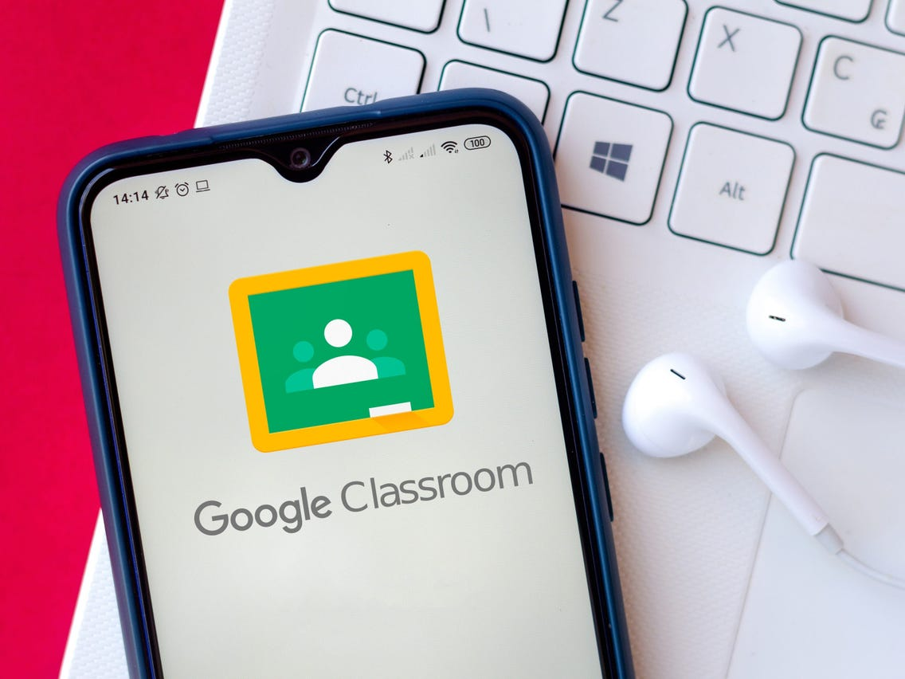
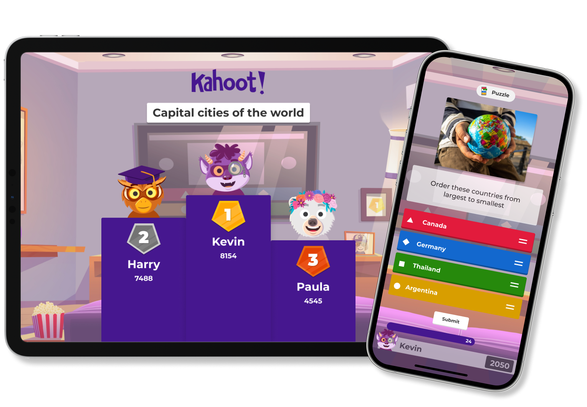
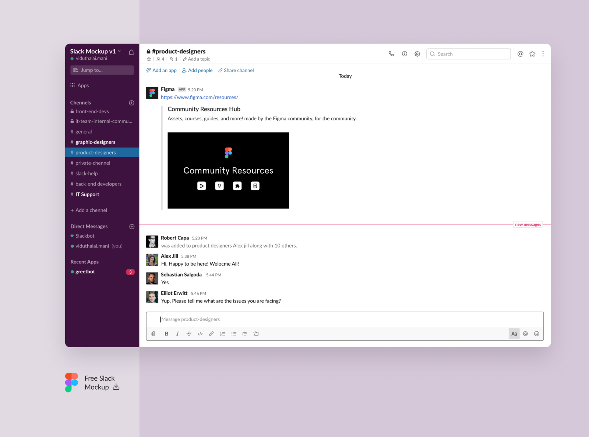
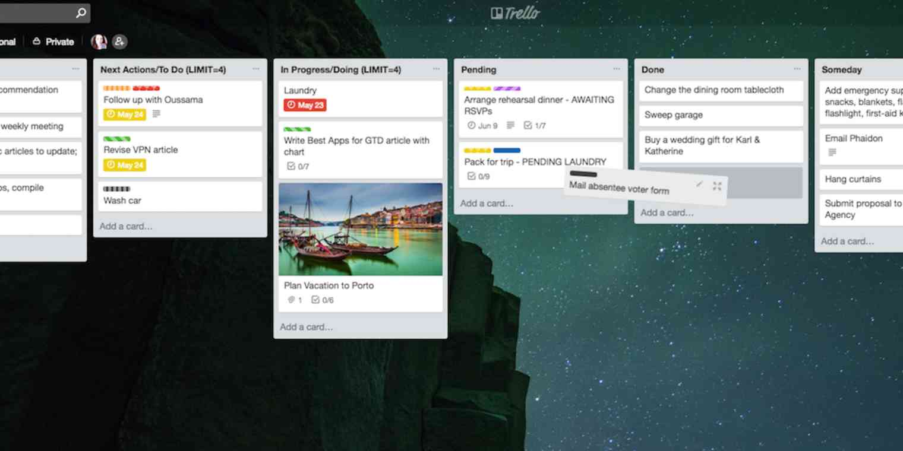
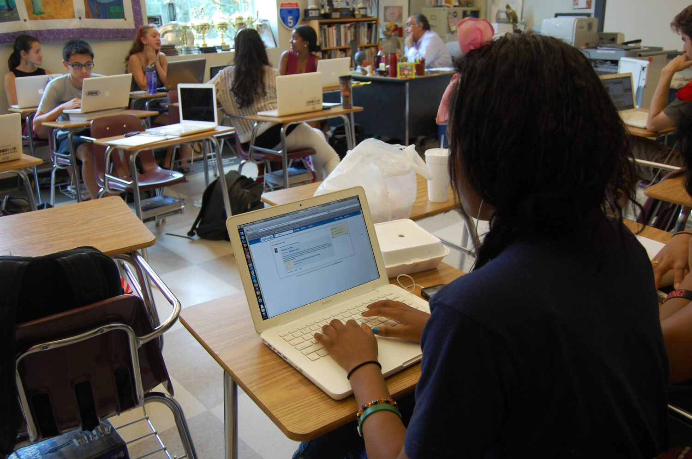
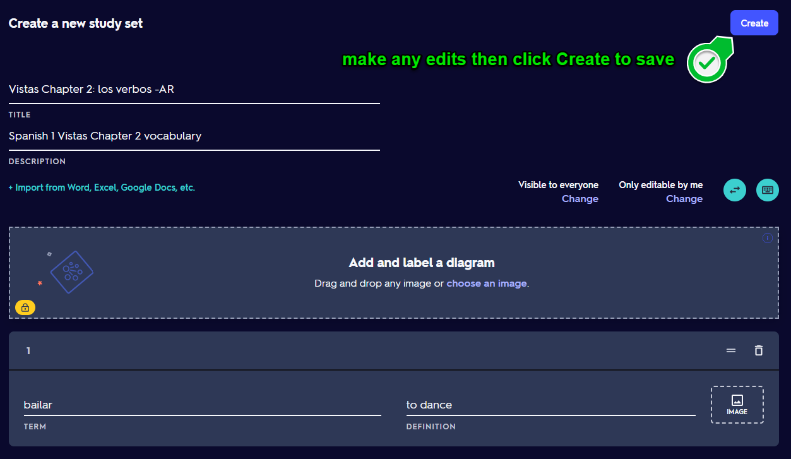
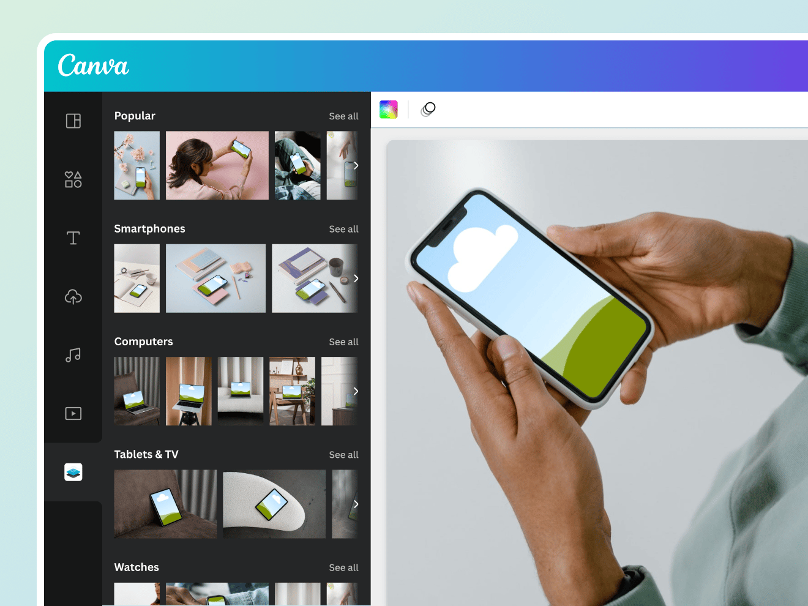
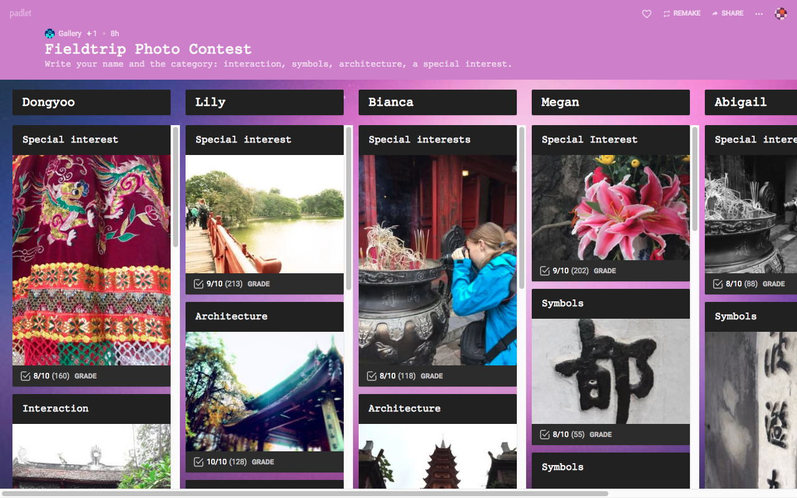

Navigating the vast ocean of teaching, where every lesson is a new adventure and every classroom a ship to steer, can be daunting. Thankfully, in this digital age, we've got an array of websites and apps at our disposal, acting as the wind in our sails. These tools not only make a teacher's life easier but also add a splash of fun to the educational journey. From organizing lesson plans to engaging students in unique ways, here's a treasure map to the top 10 digital gems every teacher should explore.
Setting Sail with Digital Companions
Embarking on the quest to find the perfect balance between teaching responsibilities and personal time can feel like searching for buried treasure. But fear not! Our curated list of digital mates is here to help you navigate through the stormy seas of education with ease and flair.
1. Google Classroom

Ahoy, Google Classroom! This digital giant is the captain of classroom organization, offering a seamless way to distribute and grade assignments without the need for paper. It's an eco-friendly choice that helps you manage classes, post announcements, and encourage student collaboration with just a few clicks.
2. Microsoft Teams
As an ESL teacher, I've learned not to underestimate the power of sticking with what's already sailing with your school's fleet. Microsoft Teams, for instance, has been a lifesaver, especially when integrated into our school's platform. It's a fantastic space for both synchronous and asynchronous communication, making it a versatile tool for virtual classrooms. With features for video meetings, file storage, and real-time collaboration, Teams keeps everyone on the same page. So, don't venture too far beyond what your school's own platform offers; sometimes, the best resources are already within reach, just like Teams.
3. Kahoot!

Learning can indeed be a hoot with Kahoot! This game-based platform turns quizzes into exciting competitions, sparking a love for learning in students that traditional methods might not ignite. As an educator, creating your own quizzes or tapping into the vast library available can elevate engagement and comprehension in a fun, interactive way.
4. Slack

Imagine a communication channel that ditches the formality of emails for a more relaxed vibe. Slack does just that, providing a platform for quick updates, resource sharing, and casual conversations with students and faculty alike. Organize discussions into channels for different classes or topics, making everything organized and accessible.
5. Trello

For those who find joy in impeccable organization, Trello acts like your very own teaching assistant. It allows you to create boards for various classes and projects, tracking tasks and progress with a satisfying sense of order. Its visual layout and drag-and-drop functionality make managing your educational universe a breeze.
6. Edmodo

Imagine a digital community where teachers, students, and parents connect in a secure, social network-inspired environment. Edmodo offers just that, enabling content sharing, messaging, and accessible learning from anywhere. It's a friendly space for education to thrive, minus the distractions.
7. Quizlet

For me, personally, Quizlet has been a godsend, especially in the realm of ESL teaching. Its flashcard-based learning system is a game-changer, allowing for the creation of custom study sets or the use of millions of existing ones. It's incredibly effective for teaching vocabulary, grammar rules, and much more. The versatility and user-friendly interface make it a must-have in any ESL teacher's toolkit, proving to be a true best friend in the ESE world.
8. Remind
Ever wish you could zap a message directly to your students or their guardians without jumping through hoops? Remind makes this possible, offering a straightforward way to send reminders, updates, or words of encouragement straight to their phones. It's a simple yet powerful tool for keeping the lines of communication open.
9. Canva

Bring out your inner artist with Canva, a design tool that makes creating visually stunning materials a piece of cake. Whether it's handouts, presentations, or educational social media posts, Canva's intuitive interface and plethora of templates empower you to capture your students' attention in style.
10. Padlet

Visualize a collaborative digital wall where students can post text, links, images, and videos. Padlet brings this concept to life, offering a unique space for sharing ideas, brainstorming, and showcasing student work in real-time. It's an innovative way to encourage participation and creativity in your classroom.
Charting New Territories
With these ten digital allies by your side, you're well-equipped to tackle the challenges of modern teaching, making your educational journey not just manageable, but truly remarkable. Remember, the essence of teaching isn't just about imparting knowledge; it's about inspiring, engaging, and nurturing minds to explore and grow. Embrace these tools, experiment with them, and find the perfect mix to complement your teaching style. Here's to smoother sailing ahead in your educational adventures. Bon voyage!